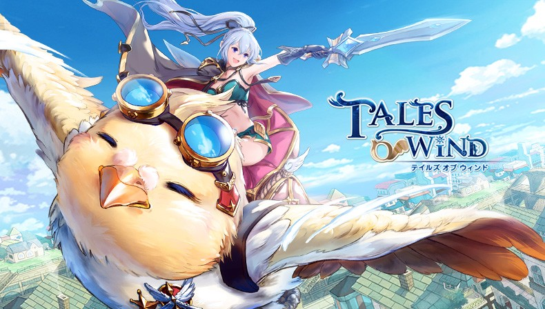

<ion-header>
  <ion-toolbar color="light">
    <ion-buttons slot="start">
      <ion-menu-button></ion-menu-button>
      </ion-buttons>
    <ion-title>
      {{ 'FARM.name' | translate }}
    </ion-title>
    <ion-buttons slot="end">
      <ion-button (click)="openLanguagePopover($event)">
        <ion-icon name="ellipsis-horizontal-circle-outline" slot="icon-only">
        </ion-icon>
      </ion-button>
    </ion-buttons>
  </ion-toolbar>
</ion-header>

<ion-content>

<ion-text>
  <h6>{{ 'FARM.descricao' | translate }}</h6>
</ion-text>

  <ion-card>
    
  </ion-card>

  <ion-item-divider color="primary">
   <ion-text color="light">
     <h4><b>{{ 'FARM.headerchefechoco' | translate }}</b></h4>
   </ion-text>
  </ion-item-divider>
  
  <ion-text>
    <h6>{{ 'FARM.chefechoco' | translate }}</h6>
  </ion-text>

</ion-content>
